AI Academy · Level 2 · Grade 7 · Week 20 · Student lesson
Repair Bias in Data
Learn to understand, design, build, test and explain AI systems responsibly.
Project: Transparent Book Recommender
Before you start
Week 19: compare collected examples with intended users.
Plan time to read, investigate and explain. Keep predictions separate from observations.
Student lesson · 1 of 17
Your mission
Your learning target
I can identify selection and coverage bias.
I can compare groups before combining results.
I can explain why more biased data may not help.
Remember before reading
Close your notes first. A rough first answer helps us choose the right starting point; it is not a score for your ability.
Without opening the old lesson, explain one key idea from Sampling and Representation. Give an example and a mistake that the idea helps you avoid.
Without opening the old lesson, explain one key idea from Noise and Outliers. Give an example and a mistake that the idea helps you avoid.
Without opening the old lesson, explain one key idea from Decision Trees. Give an example and a mistake that the idea helps you avoid.
After trying, check the relevant lesson or ask your teacher. Change the part of your explanation that the evidence shows was wrong.
Week 20: Repair Bias in Data
Fairness work changes data, features, tests, or use conditions, then rechecks outcomes.
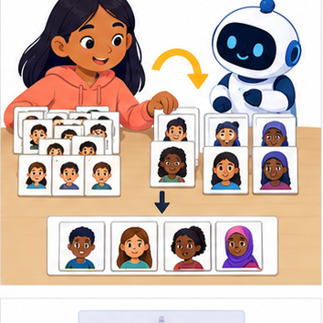
THINKER MISSION
Redesign an imbalanced speech dataset and specify retests.
Thinker name and date:
Readiness for the connected explanation
What is the difference between a population and a sample?
This week’s end goal
By the end, I can distinguish a biased collection process from a mere small dataset.
Student lesson · 2 of 17
Notice the evidence
PICTURE STORY
Notice → Predict → Explain
Begin with visible evidence. Do not explain more than the picture and information support.
MYSTERY
The learners must use repair bias in data to solve a problem. What information do they have? What decision or calculation do they make? What would count as evidence that it worked?
Three observations (what you can point to):
My prediction and the clue supporting it:
A closer explanation
A fictional poll has 8 Yes among 10 club respondents and 2 Yes among 10 other respondents. If only club members are surveyed, an 80 percent result misses a group with a different pattern. Examine who is included before treating a larger sample as better.
Student lesson · 3 of 17
See how it works
VISUAL MECHANISM
Input → Process → Output
Trace the information. At each stage, ask what changed and how you could test it.
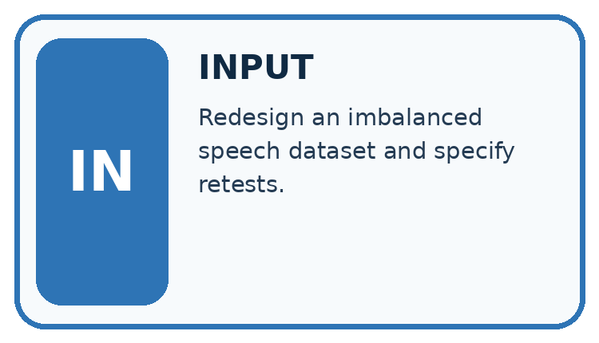
↓
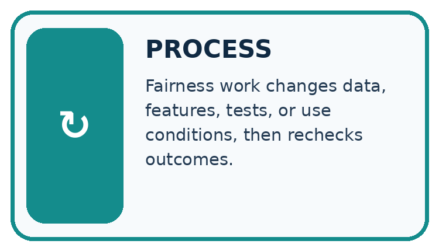
↓
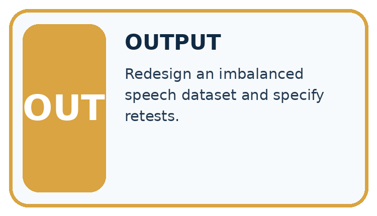
Which stage could fail even when the other two are correct? Explain:
A closer explanation
club_yes, club_n = 8, 10
other_yes, other_n = 2, 10
print(club_yes / club_n)
print(other_yes / other_n)
print((club_yes + other_yes) / (club_n + other_n))Follow the evidence
The combined observed sample has 50 percent Yes. This is not automatically a population estimate: we also need to know how the groups were selected and how many people each represents. Do not average percentages without considering their denominators.
Combine counts, not just percentages
The club has 8 Yes out of 10, and the other group has 2 Yes out of 10. Combine the Yes counts to get 10 and combine the response counts to get 20; the combined observed rate is 10 divided by 20, or 50 percent. When group sizes differ, simply averaging their percentages can give the wrong combined rate. A correct combined calculation still describes the collected sample, not automatically the whole school.
Connect the picture and the explanation
Point to the input, the deciding step and the result in this week’s visual. Explain the same step in ordinary words. A picture helps when you can say what each part represents.
Student lesson · 4 of 17
Compare the cases
CASE GALLERY
Four Tests, Four Kinds of Evidence
A system is not understood until it survives more than one comfortable example.


NORMAL CASE: predict and name evidence. BOUNDARY CASE: predict and name evidence.


MISSING INFORMATION: predict and name evidence. TRANSFER CASE: predict and name evidence.
Which case is most likely to reveal a hidden assumption? Why?
Change one thing in the pictured case
Change: Recruit more club volunteers only.
Prediction: Sample size increases without fixing missing representation of other learners.
Reason: The added respondents come from the already overrepresented group.
Student lesson · 5 of 17
Words that unlock the idea
VOCABULARY LAB
Words You Can Use to Reason
A definition matters when you can recognize the idea, use it, and contrast it with a near-miss.
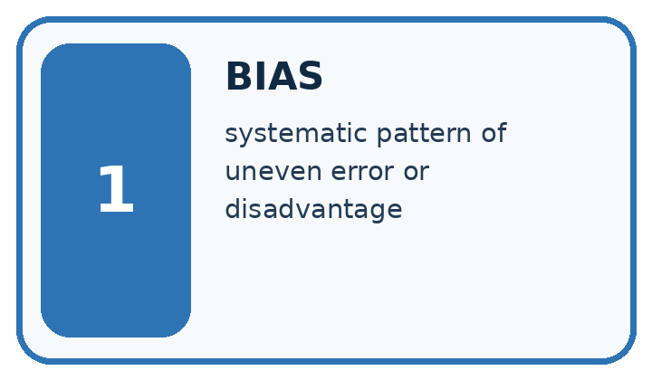
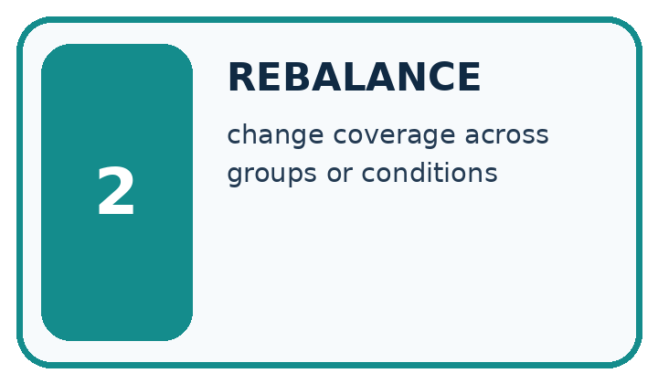
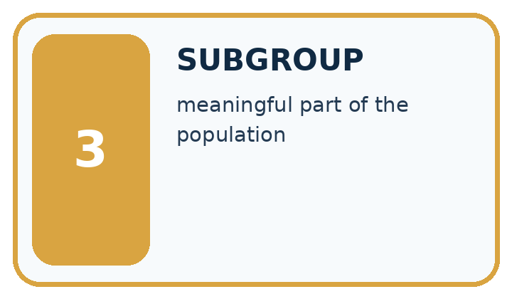
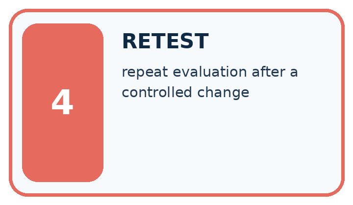
| Word | My own example | Not this / boundary |
|---|---|---|
| bias | A systematic tendency in data, decisions or outcomes that can distort a result or disadvantage people. | |
| rebalance | Change the relative representation of groups or classes in data using a stated method. | |
| subgroup | A defined subset of cases considered separately in analysis. | |
| retest | Run a test again after a change or under specified new conditions. |
Words used in the closer explanation
| Word | Meaning |
|---|---|
| Selection bias | Systematic distortion caused by who enters the data |
| Undercoverage | Leaving part of the target group out of selection |
| Nonresponse | A selected participant does not respond |
Student lesson · 6 of 17
Follow a worked example
WORKED EVIDENCE
Reason Step by Step
Predict first. Then check each step. A correct answer without visible reasoning is incomplete evidence.
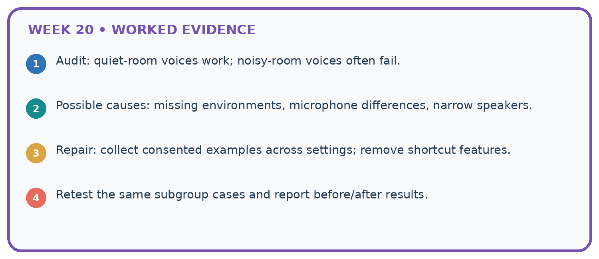
1. Audit: quiet-room voices work; noisy-room voices often fail.
2. Possible causes: missing environments, microphone differences, narrow speakers.
3. Repair: collect consented examples across settings; remove shortcut features.
4. Retest the same subgroup cases and report before/after results.
Recalculate, retrace, or restate the reasoning in your own representation:
CHECK Did the evidence answer the exact question? Did the total, path, or source record stay consistent?
A closer explanation
Learn from the worked case
Cover the result before checking it. Say what is given, choose the procedure, and follow one step at a time. Then uncover the result and explain your first mismatch. Ask why a step is allowed, not only what number it produces.
A pictorial worked case: Repair Bias in Data
A fictional school polls learners about adding comic recommendations.
The facts we will use
Library-club respondents: 12 Yes out of 15. Other respondents: 3 Yes out of 15.
The full grade has 30 club members and 90 others. These respondents were volunteers, not random selections.
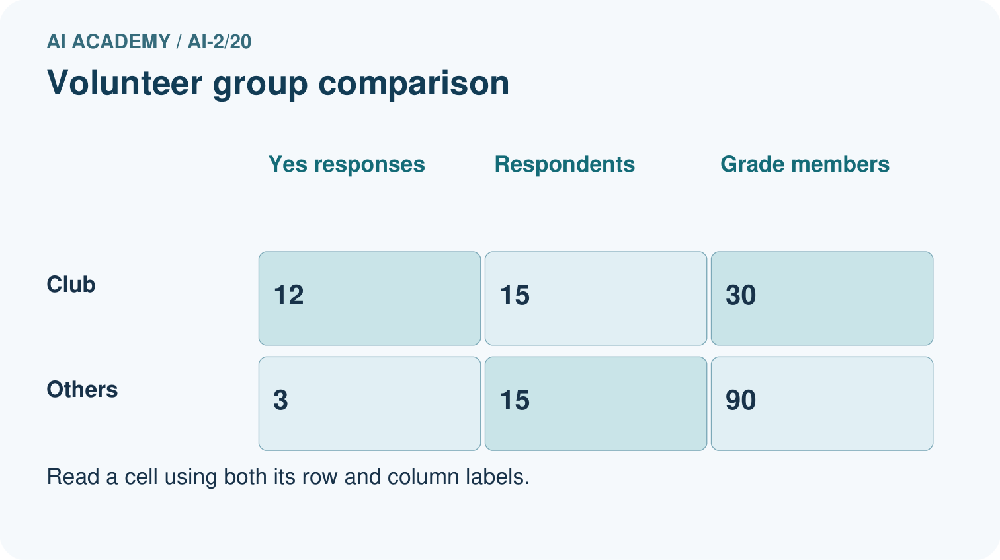
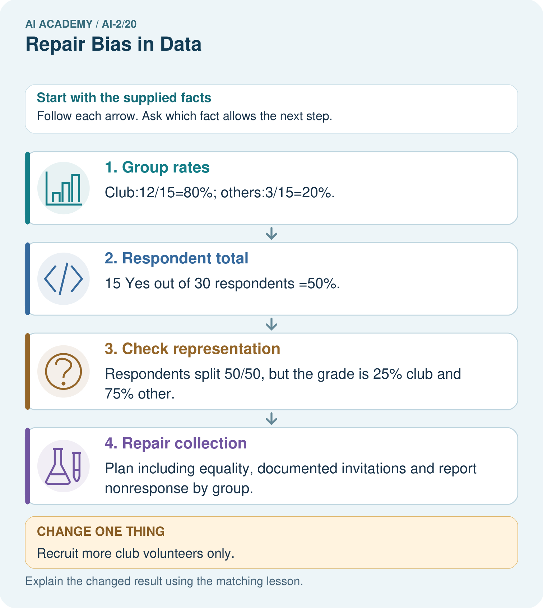
Read the picture one step at a time
Why this result follows
The combined respondent result gives club members more influence than their share of the grade. A weighted illustration using 25% and 75% gives 0.25×80%+0.75×20%=35%, but volunteers may differ within each group, so weighting alone does not establish the true grade preference. Improve the collection process rather than announcing the weighted number as fact.
What this example does not establish
Neither raw nor weighted volunteer rates prove the whole grade’s opinion; privacy and consent rules still apply.
Read the labelled picture: Why must 35% be labelled an illustration rather than the measured grade-wide Yes rate?
Change one thing: Recruit more club volunteers only. Predict the result before checking the explanation. What remains the same?
Student lesson · 7 of 17
Find and repair a mistake
ERROR DETECTIVE
Compare → Diagnose → Repair
Do not patch the answer. Find the earliest unsupported assumption, wrong step, or weak evidence.
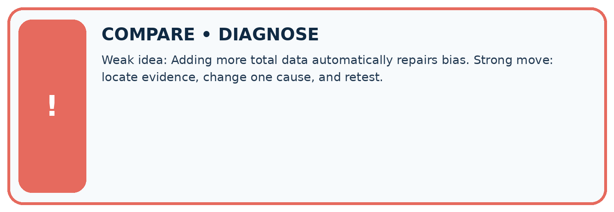
| Evidence record | Expected | Actual | Likely cause / next test |
|---|---|---|---|
| normal case | works | ||
| boundary case | stated rule | ||
| missing input | safe response | ||
| fresh transfer | generalizes |
Repair one cause. Why is this repair better than changing several things?
A closer explanation
Group differences suggest that coverage matters, but do not explain why choices differ. Small group counts also make percentages unstable. Use neutral group labels in fictional data rather than personal or sensitive attributes.
Student lesson · 8 of 17
Practise together
LOGIC STUDIO
Trace Before You Run
Block code, pseudocode, tables, and diagrams are different ways to expose the same reasoning.

SET evidence_record PREDICT expected_result RUN one normal case and one boundary case COMPARE actual_result with expected_result IF different: locate first cause; change one factor; RETEST EXPLAIN result, limitation, and next safe step
Trace one input. Which line changes the state or chooses a path?
A closer explanation
Surveying another 100 people from the same undercovered source may make the sample larger without fixing the selection problem. Improve access to missing groups and record nonresponse; do not simply duplicate existing rows.
Practise with less help: Combine counts
Use workbook W2 for the connected example “Selection bias and coverage”. First fill the input and rule boxes. Try the middle steps before asking for a hint. After a hint, try the next step yourself.
| Plan | Do | Check |
|---|---|---|
| What is given? Which rule or procedure applies? | Record each intermediate step. | Does the result follow? What remains unknown? |
Explain your trace to a partner. Your partner points to one step to check. Swap roles on the next case. Each person writes their own explanation.
Check your reasoning
Use the worked case for Selection bias and coverage. Proposed explanation: “A successful run proves the conclusion”. Decide whether this explanation is supported. Point to the step or supplied fact that decides; explain your repair if needed.
Answer on your own before discussion. If you are unsure, say which step you need help with.
Explain the picture
Why must 35% be labelled an illustration rather than the measured grade-wide Yes rate?
This is supported practice. Keep the separately named independent case for an attempt before feedback.
Student lesson · 9 of 17
Run the investigation
EVIDENCE LAB
Predict → Test → Record → Explain
Keep expected and actual results separate. Surprises are useful data when recorded honestly.
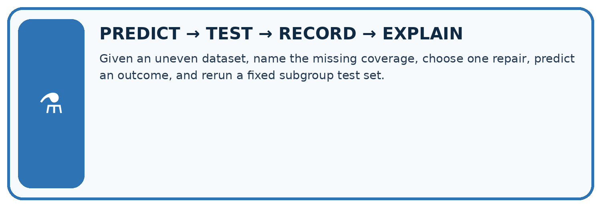
Given an uneven dataset, name the missing coverage, choose one repair, predict an outcome, and rerun a fixed subgroup test set.
| Test / input | Prediction | Actual | Evidence / calculation | Change or keep? |
|---|---|---|---|---|
| normal | ||||
| boundary | ||||
| missing | ||||
| fresh transfer |
What did the hardest test teach you that the normal test did not?
Plan → try → check
Before trying: what do I expect, and why? While trying: which step could first go wrong? Afterwards: what did I actually observe, and what should change? Keep “not run” if you only traced the procedure.
Student lesson · 10 of 17
Build your understanding
MASTERY
From Knowing the Word to Owning the Idea
Move upward only when you can produce evidence without copying the worked example.

1 • NAME: Define the concept without repeating the textbook.
2 • TRACE: Show the information, state, branch, calculation, or evidence path.
3 • APPLY: Solve a different example independently.
4 • CHALLENGE: Find a boundary case, counterexample, or unfair outcome.
5 • EXPLAIN LIMITS: Say when the result should not be trusted or used alone.
My strongest evidence of independent understanding:
Student lesson · 11 of 17
Connect your project
CUMULATIVE PROJECT
Transparent Book Recommender
Every week adds one inspectable piece. The system must show how it reached a result.
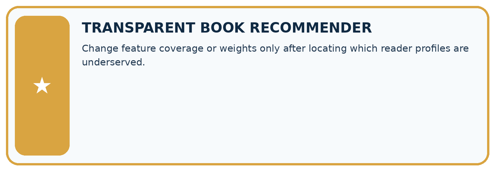
THIS WEEK’S CHECKPOINT Change feature coverage or weights only after locating which reader profiles are underserved.
SYSTEM MAP Reader need → allowed inputs → transparent rule or score → ranked candidates → explanation → test record → human decision
What will you add, change, or verify in the project this week?
What should remain under human control?
RESPONSIBLE DESIGN Collect only necessary information. Show uncertainty and limits. Never confuse a ranking with a fact about a person.
Evidence for your project
Broaden recommender feedback collection and show respondent group coverage before making user-preference claims.
Student lesson · 12 of 17
Show what you know
INDEPENDENT MASTERY PROOF
Explain • Transfer • Test • Defend
Complete this page without copying the worked example. Your reasoning matters more than decoration.
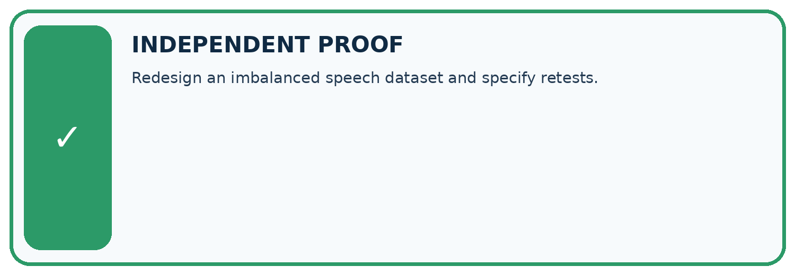
CHALLENGE Redesign an imbalanced speech dataset and specify retests.
1. My fresh example, trace, calculation, or design:
2. My evidence that it works (include a boundary or missing-data case):
3. One limitation, fairness concern, or situation needing human review:
SELF-CHECK □ I explained the mechanism □ I used evidence □ I tested a fresh case □ I named a limitation □ I can answer ‘why?’
Student lesson · 13 of 17
Study a complete case
Week 20 Worked case
Use the supplied details to practise the weekly concept before attempting the independent question. This case extends the illustrated lesson.
The situation
Training has eighteen adventure readers and two poetry readers; many intended users prefer poetry.
The question
Propose repair and evaluation.
Worked explanation
Collect varied relevant poetry examples with consistent labels. Compare both interests on separate evaluation cases before and after repair.
Explain it in your own words
Which detail supports the answer, and why does it matter?
Trace the supplied case visually
Repair coverage with varied examples
| Evidence or stage | Value or result |
|---|---|
| Adventure readers | 18 |
| Poetry readers | 2 |
Training has eighteen adventure readers and two poetry readers; many intended users prefer poetry.
Propose repair and evaluation.
Collect varied relevant poetry examples with consistent labels. Compare both interests on separate evaluation cases before and after repair.
Student lesson · 14 of 17
Try a new case independently
Independent case: Audit independently
A survey has 18 Yes of 20 club members and 2 Yes of 10 others. Compute both group rates and combined rate. Explain why 20/30 does not automatically describe the whole grade.
Attempt this case before feedback. Record any help. Earlier examples below are further practice; a case already practised with feedback cannot establish fresh transfer.
Week 20 Independent application
Close the worked explanation. Apply the idea to this different question without copying.
A dataset has 18 adventure readers and 2 poetry readers. A recommender ignores poetry preferences. What would you inspect and test after a repair?
My answer, with a trace, calculation or supporting evidence
Create and test
Change one relevant detail. Predict the result before testing. Include a boundary or missing-information case when it helps reveal a limit.
My changed input and expected result
Connect to your project
Change feature coverage or weights only after locating which reader profiles are underserved.
The evidence I will keep
Your teacher has the independent answer and scoring criteria. Complete the matching workbook week to keep your practice evidence together.
Transfer practice from the original programme
A catalogue has 30 adventure titles and 2 poetry titles. A recommender rarely suggests poetry. Design a repair and an evaluation that distinguishes catalogue coverage from scoring preference.
Use feedback to improve
Attempt the independent case before hints. Record whether you worked alone, used a hint or followed a model. After feedback, fix the first unsupported step and explain why it changed. A later check uses a changed case, not a copied answer.
Student lesson · 15 of 17
Your lesson route
Start with this question: A fictional school polls learners about adding comic recommendations.
| By the end, I can | How I will show it |
|---|---|
| Identify selection and coverage bias | Explain the deciding step, show a trace or test, and state one limit. |
| Compare groups before combining results | Explain the deciding step, show a trace or test, and state one limit. |
| Explain why more biased data may not help | Explain the deciding step, show a trace or test, and state one limit. |
Remember → watch and explain → try with help → investigate → try independently → keep project evidence. Your teacher may spread this lesson across several classes.
Keep your first prediction. Compare it with what the evidence shows and explain any change.
Student lesson · 16 of 17
Finish and return
Close your notes. Explain this goal in your own words: Identify selection and coverage bias
If you are unsure, return to the worked picture and explain one arrow. If you are ready, change an input or assumption and justify your prediction.
Save your workbook evidence. At the next review, try a different case before opening your old answer.
Student lesson · 17 of 17
Supported practice, repair and portfolio
Use this supported practice once, in the browser or on paper. Keep the reserved independent assessment for a separate first attempt before teacher feedback.
A fictional school polls learners about adding comic recommendations.
Practice 1: explain the deciding evidence
Which labelled step matches this detail? Plan including equality, documented invitations and report nonresponse by group.
1. Group rates
2. Respondent total
3. Repair collection
4. Check representation
Hint if needed: Read the steps in the pictorial case. Match the supplied detail to the stage that performs or records it.
After your attempt, compare with the supported explanation: Repair collection Plan including equality, documented invitations and report nonresponse by group. The combined respondent result gives club members more influence than their share of the grade. A weighted illustration using 25% and 75% gives 0.25×80%+0.75×20%=35%, but volunteers may differ within each group, so weighting alone does not establish the true grade preference. Improve the collection process rather than announcing the weighted number as fact.
Practice 2: explain the deciding evidence
Changed-case practice: Recruit more club volunteers only. Which conclusion is supported by the supplied facts?
1. This one example guarantees correct results for every future input.
2. Sample size increases without fixing missing representation of other learners.
3. We can decide the result without examining the changed input or the procedure.
Hint if needed: Use the changed condition and the deciding step in the pictorial trace. The answer must say what follows from those facts.
After your attempt, compare with the supported explanation: Sample size increases without fixing missing representation of other learners. The added respondents come from the already overrepresented group.
Repair a missing building block
Review Sampling and Representation (ai-2/19). Goal: Define a question and target population. Short practice: Can 80% response be reported as 80% of the whole grade responding?. Return to this week and explain what you changed.
Review Noise and Outliers (ai-2/17). Goal: Calculate mean and median. Short practice: If 18 was genuine, which summary better describes the middle observed task, and what extra fact should be shown?. Return to this week and explain what you changed.
Review Decision Trees (ai-2/14). Goal: Fit a root question and leaf predictions from training examples. Short practice: Why does changing colour alone not change this tree’s prediction?. Return to this week and explain what you changed.
Predict, run and debug
The browser lab lets you edit the supported Python examples already included in this lesson. Predict first, run, inspect the actual output or error, change one input, then run again. Keep code, predictions, actual results and a reasoned revision together. On paper, label your result as a trace rather than an execution.
Keep your completed work
Use Download completed work in the hosted lesson to export your answers, reflections, practice feedback and code-run evidence. Open the HTML copy to read or print it. Drafts stay in this browser when storage is available; clear drafts on a shared device.